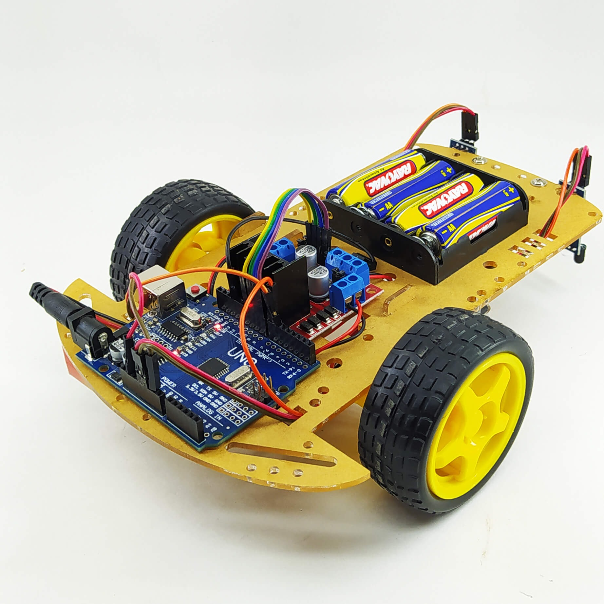

Um robô seguidor de linha inspirado em AGVs industriais.
O CargoBot é um robô autônomo baseado em Arduino que segue linhas no chão para simular um AGV industrial. Seu objetivo inicial é a navegação autônoma, com possibilidades futuras de carga e descarga.
Saiba mais